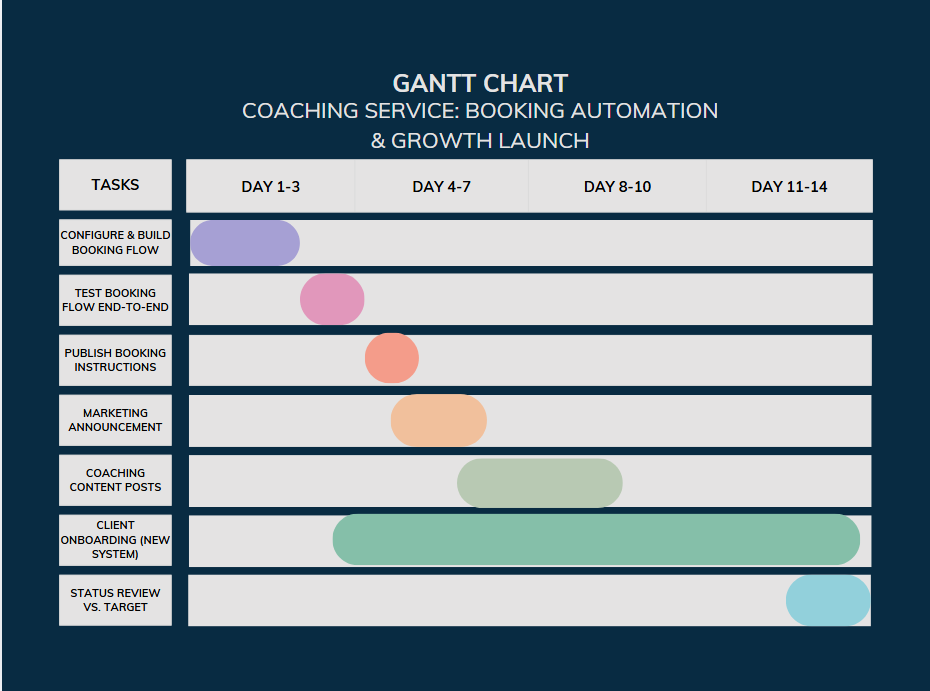

Replace manual, DM-based session scheduling with an automated Discord booking system, and use the resulting time savings and improved client experience to grow from an already-live coaching service to 5 active monthly clients within a 2-week sprint.
In scope: Discord ticket-tool booking automation; a marketing push across existing channels (Instagram, YouTube, Discord, word of mouth); onboarding new clients through the new booking flow.
Out of scope: Payment automation. Payments stay manual via UPI, a deliberate choice to avoid third-party platforms taking a cut of every session. New service packages or pricing changes. New marketing channels beyond the four already in use.
2 weeks, start to target.
| Workstream | Tasks |
|---|---|
| A. Booking Automation | Configure Discord ticket-tool booking flow · Build client flow (open ticket → select package → confirm slot) · Test end-to-end · Publish pinned booking instructions |
| B. Marketing Push | Announce automated booking across Instagram, YouTube, Discord · Post 2-3 pieces of coaching content (VOD clips, testimonials, rank-up highlights) · Direct referral asks to past clients |
| C. Client Onboarding & Delivery | Confirm first bookings via new system · Deliver sessions (VOD review + live coaching) per existing packages · Collect UPI payment manually per session |
| D. Tracking & Review | Track inquiries vs. conversions · End-of-sprint review against 5-client target |

Visual timeline across the 2-week sprint (10 working days):
| Task | Days |
|---|---|
| Configure & build Discord ticket-tool booking flow | Day 1–2 |
| Test booking flow end-to-end | Day 3 |
| Publish pinned booking instructions | Day 4 |
| Marketing announcement (Instagram, YouTube, Discord) | Day 4–5 |
| Coaching content posts (VOD clips, testimonials) | Day 5–7 |
| Client onboarding via new system (ongoing) | Day 3–14 |
| Status review vs. 5-client target | Day 14 |
This is a solo-run business, so most roles collapse to one person. The value here is in showing the framework is understood and ready to formalize the moment anyone else gets involved (e.g. someone helping build out bot features later).
| Workstream | Responsible | Accountable | Consulted | Informed |
|---|---|---|---|---|
| Booking Automation | Saksham | Saksham | - | Clients (via pinned instructions) |
| Marketing Push | Saksham | Saksham | - | Discord/Instagram/YouTube audience |
| Client Onboarding & Delivery | Saksham | Saksham | Client (session preferences) | - |
| Tracking & Review | Saksham | Saksham | - | - |
| Risk | Mitigation |
|---|---|
| Inconsistent client flow week to week | Diversify across all 4 existing channels rather than relying on one; keep a steady content cadence rather than one-off pushes |
| Time conflict with ongoing job search / interviews | Block fixed coaching hours separate from job-search hours; communicate availability clearly to clients up front |
| Booking bot technical failure | Test thoroughly before public rollout; keep manual DM booking as a fallback if the bot breaks |
| Manual payment causing delays or no-shows | Require payment confirmation before a session is locked in; keep UPI details pinned for instant payment |
| Promotional fatigue / audience tuning out repeated posts | Balance sales posts with value-driven content (tips, highlights) rather than pure promotion |
Instagram promotion is converting slower than expected. Discord word-of-mouth is outperforming it, so shifting more effort there for Week 2 rather than continuing to split focus evenly across channels.
Push toward the 5-monthly-client target through direct referral asks and continued content, while monitoring the booking system for any issues under real client load.